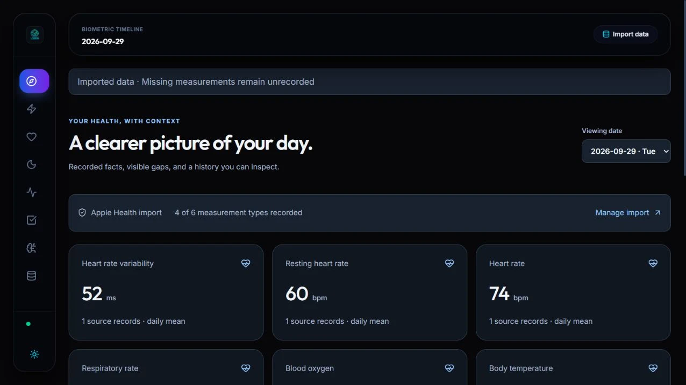
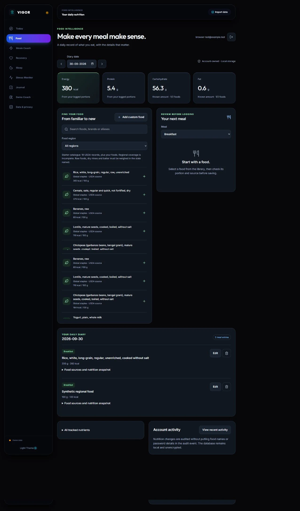

Review before saving
Apple Health XML and ZIP imports run through a cancellable worker. The user reviews the import before records are saved, and the original timestamps and units remain part of the data.
Personal data, with its context intact.

View full captureHealth exports contain useful information, but also missing values, overlapping records and unfamiliar units. A polished dashboard can hide those gaps. VIGOR is built to keep the source and limits visible.
I built the import and nutrition workflows, account-owned persistence and scoped integration surface. The interface turns exported records and logged food into a history the user can review, with optional read-only AI access.
React · Vite · Node.js · SQLite · MCP · OAuth
Apple Health XML and ZIP imports run through a cancellable worker. The user reviews the import before records are saved, and the original timestamps and units remain part of the data.
The timeline shows which measurement types were recorded. Missing measurements stay unknown rather than becoming zeroes or invented scores.
The AI coach is opt-in and read-only, with visible record access. Scoped connectors and owner checks keep an assistant’s access tied to the user’s consent.
Food entries keep their portion and nutrition snapshot. The development capture uses a small test catalogue and synthetic meals; the project also includes a larger USDA food catalogue.

View full captureThe implementation includes review-before-save imports, a transaction-backed SQLite API, revision checks and consent-scoped connectors. The test captures demonstrate the difference between recorded measurements and missing data, as well as a food diary that retains its source and portions.
Request a walkthrough